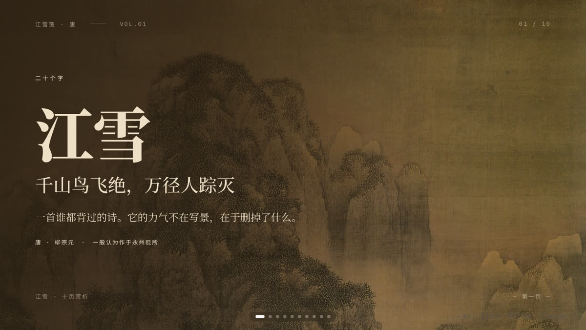

网页 PPT
把一篇内容做成能在浏览器里翻页的演示稿：一个 HTML 文件，电子杂志风或瑞士国际主义风，自带演讲者视图、观众屏和备注。不用装 PowerPoint，双击就能讲。

江雪
二十个字的诗，讲成十页。牛皮纸底、宋画做景、每页一条演讲备注。
打开《江雪》，按 ← → 翻页 →发给你的 Agent 安装
复制下面这段话，发给你的 Agent 即可安装。安装内容就是 GitHub 上那份技能，不经过我改写。
请帮我安装这个页面里的「网页 PPT」技能：https://liangz77.cn/ai-demo/guizang-ppt-skill/
Agent 会读 install.md：从 op7418/guizang-ppt-skill 取指定提交，装进 Codex 或 Pi 的技能目录。作者歸藏，AGPL-3.0。只需要 Node，做卡片出图才另外需要 Playwright。
一份演示稿是怎么做出来的
六步。前三步定方向，后三步出成品。方向错了，后面全是返工——所以技能里最啰嗦的是第二步。
开工前先看有没有更新
技能目录里跑一次
git fetch，落后上游就先问你要不要更新，再继续。这一步写进了技能，不靠人记得。把七件事对齐
风格（杂志风 / 瑞士风）、受众和场合、讲的时长、有没有原始素材、图片怎么处理、主题色、硬约束。只给一个主题也能开工：Agent 先问最要紧的 1–3 个，其余按默认走，并说明假设了什么。
定页数和明暗节奏
15 分钟约 10 页，30 分钟约 20 页。写页面之前先排三张表：叙事弧（钩子→定调→主体→转折→收束）、每页放什么、每页是亮底还是暗底。连续三页同一个底色会被打回——看着累。
拷模板，只改内容
两种风格各有一份成品模板，翻页、演讲者视图、动效、字体都已在里面。复制一份，改
data-theme换配色，再往十种现成版式里填内容。不自己发明版式，也不在页面里写死颜色。写演讲备注
每页一个固定的页面 ID，备注按 ID 存，页面重排、你临时改的稿子都不会串页。备注明细里「讲多久」和「多久自动翻页」是两件事，前者是计划，后者是播放行为，默认关闭。
自检、逐页看、试讲一遍
先跑校验脚本（页面 ID、备注错位、总时长超预算），再逐页截图看版式，最后按
P进演讲者视图翻一遍：观众屏、计时、激光笔、黑屏、冻结。脚本只能证明结构对，好不好看还得眼睛看。
示例提示词
把 $guizang-ppt-skill 后面的要求写清楚就行。四个常用场景：
从零做一份
用 $guizang-ppt-skill 把这个故事做成一份演示稿：风格 A 电子杂志风，牛皮纸主题，10 页，赏析向，带演讲备注。
规定场次和风格
用 $guizang-ppt-skill 做 20 页、30 分钟的分享稿，瑞士国际主义风，克莱因蓝，内容是这半年的产品迭代。
只改一页
用 $guizang-ppt-skill 把第 5 页改成横向时间线，其余页不要动，改完重跑校验脚本。
加配图
用 $guizang-ppt-skill 给封面和第 7 页配宋画做底图，压暗到正文可读，图注写清作者和收藏机构。
《江雪》的实际参数
- 风格
- A · 电子杂志风
- 主题色
- 牛皮纸
kraft-paper - 页数 / 时长
- 10 页 / 11.8 分钟
- 配图
- 3 张公版宋元古画做底图与图卡
- 校验
validate-presenter-mode：0 error 0 warning- 交付物
- index.html + images/ + motion.min.js，共 1.6 MB
图都来自公共领域：北宋范宽《雪景寒林图》、元黄公望《九峰雪霁图轴》、南宋马远《寒江独钓图》。底图压得很暗，只留山形和雪意，文字压在上面还读得清。
两个真踩过的坑，复刻时可以直接跳过：流水线页的标题不要加 data-anim，那个动效配方会把整页标记压到 15% 亮度，标题会一直灰着；底图压暗不能用 z-index:-1 的遮罩层，会掉到幻灯片背景下面完全不生效，要写成 section 的多层背景。
从一句需求到能上台讲，大约半小时，其中一半时间在改版式。